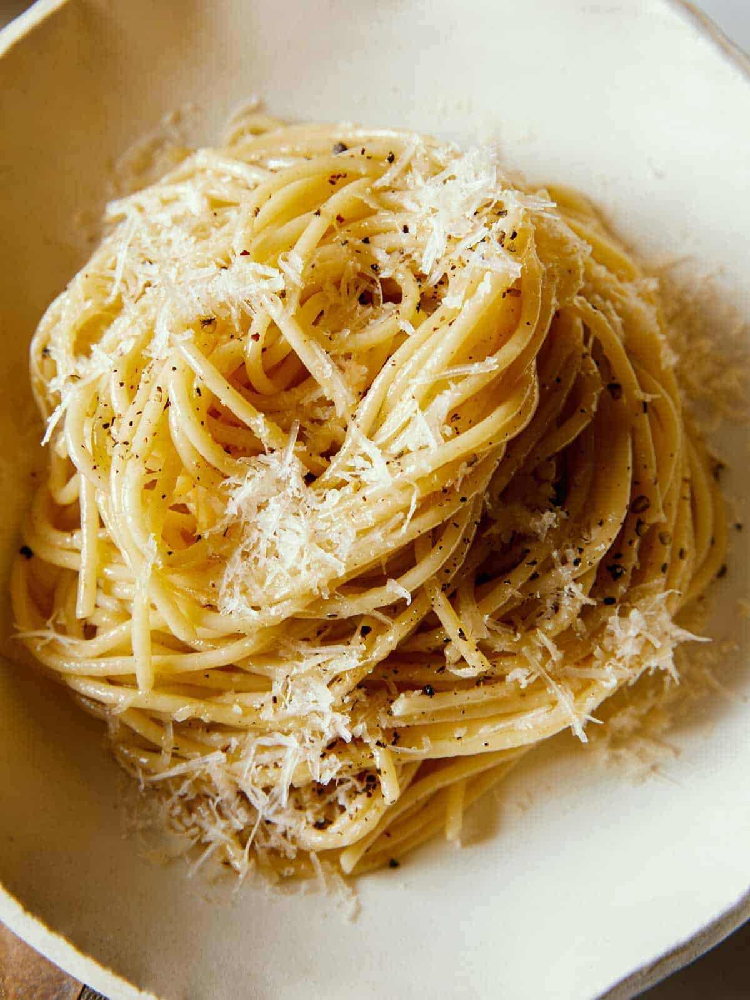

Cacio E Pepe

Description
Delicious simple italian pasta made with cheese and pepper.
Ingredients
- 220 g Pecorino Romano
- 350 g spaghetti
- 14 g whole black peppercorns
- 7.5 cups of water
- Pinch of salt
Steps
- Grate cheese
- Grind peppercorns and toast for 2-3 minutes
- Boil water with salt then cook spaghetti for 5 minutes
- Add two ladles of pasta water to the peppercorn pan
- Finish cooking spaghetti in the pan
- Add pasta water to the cheese to make paste
- Mix paste in the pan and emulsify and finish cooking pasta